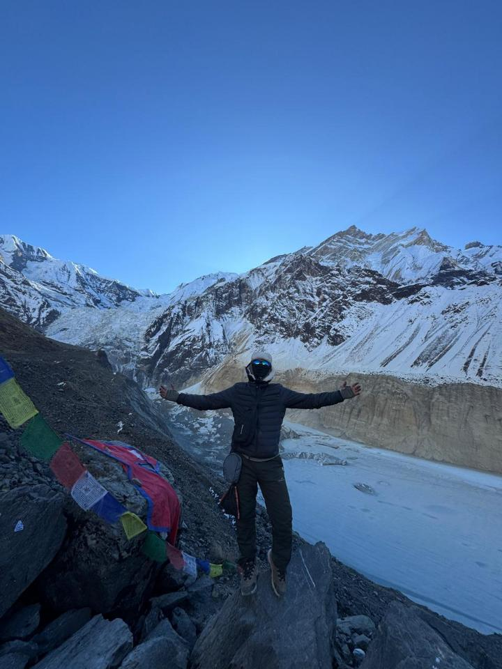

Nepstro
===Hike with bro===
===JOIN US TODAY===



- Trekking
- Trekking is a
long-distance,multi-day journey on foot through natural,
often remote or rugged terrain such as mountains, forests, or
wilderness areas. Unlike short recreational hikes, trekking typically
lasts several days to weeks, involves sustained physical effort, and requires detailed
planning, specialized gear, and overnight stays in camps, mountain lodges, or tea houses.
It often takes place off established trails, in high-altitude environments, and demands greater physical endurance and mental preparation.